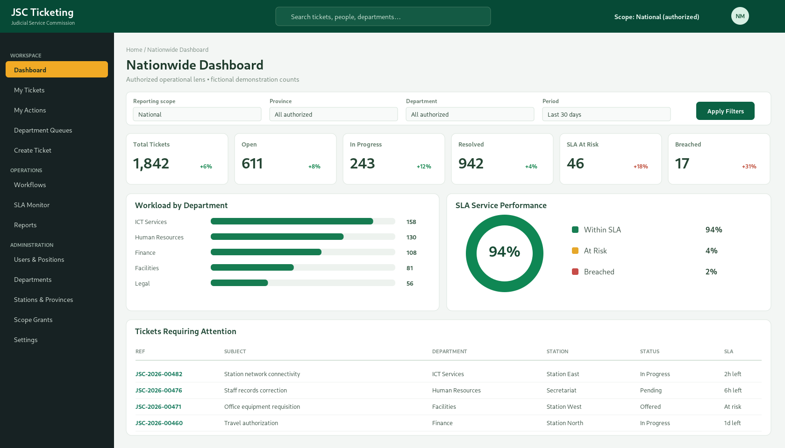
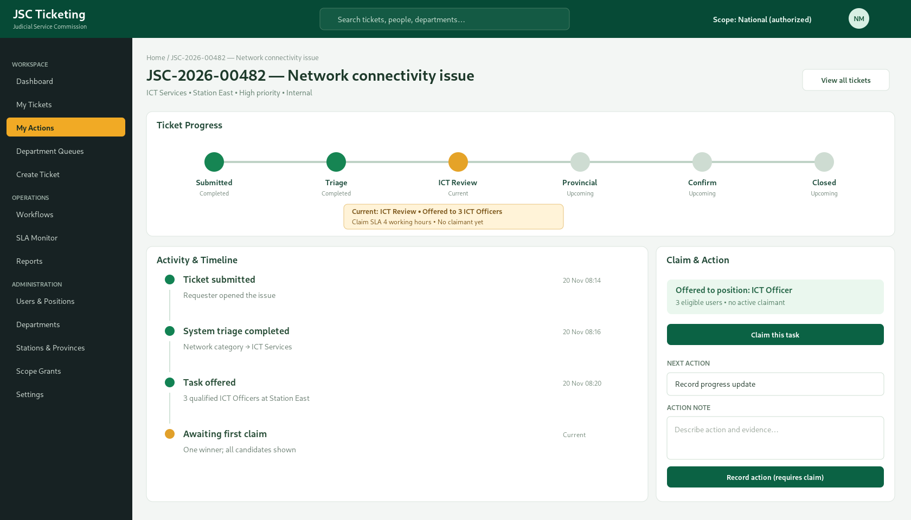
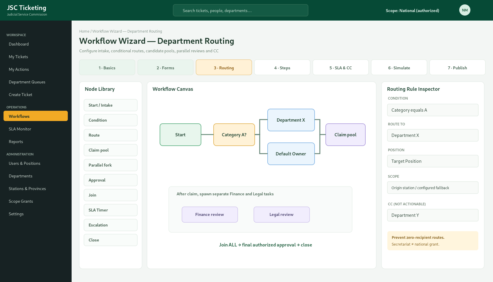
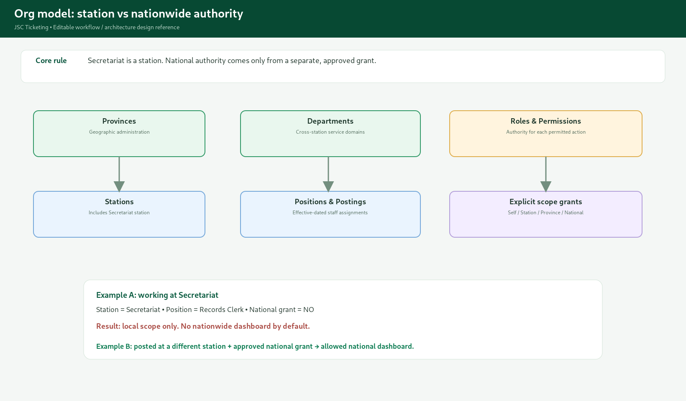
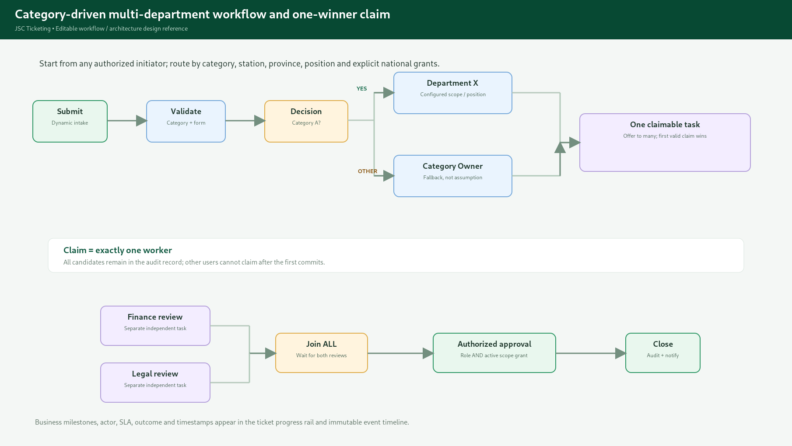
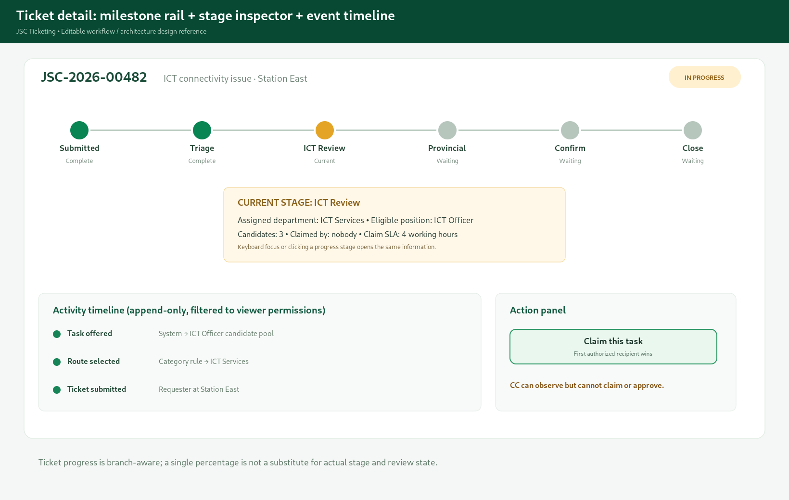
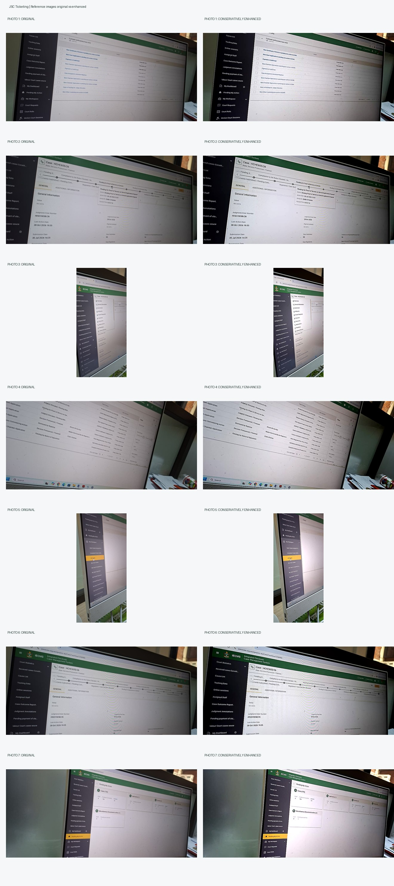
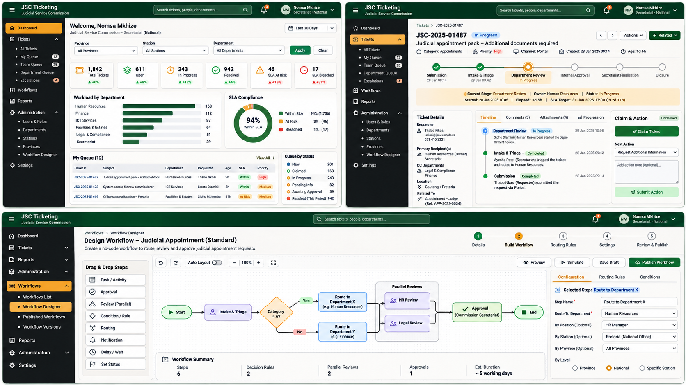
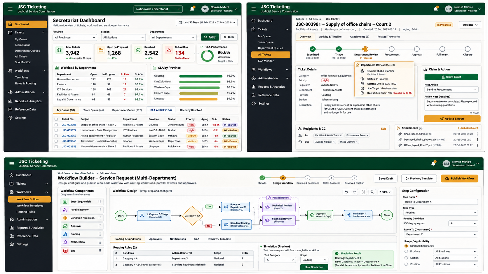
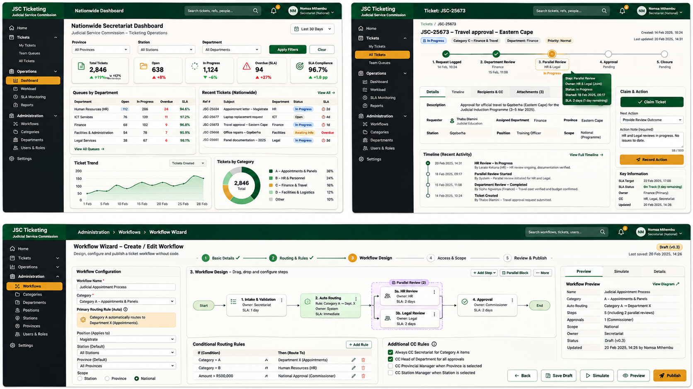

Open the interactive offline UX prototype · Read project guide
Preferred design references (editable SVG available beside each PNG)



Process / permission diagrams



Original photograph references

Experimental AI-assisted concept boards
These are artistic explorations and can have inaccurate place names or metrics. Do not use the content as JSC data.


